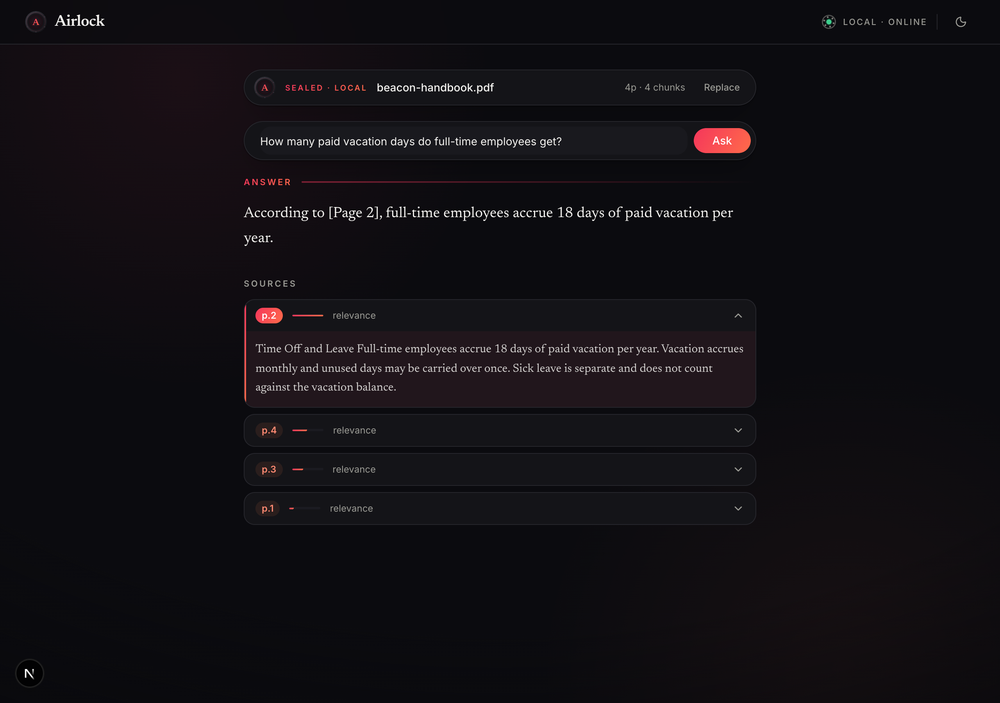
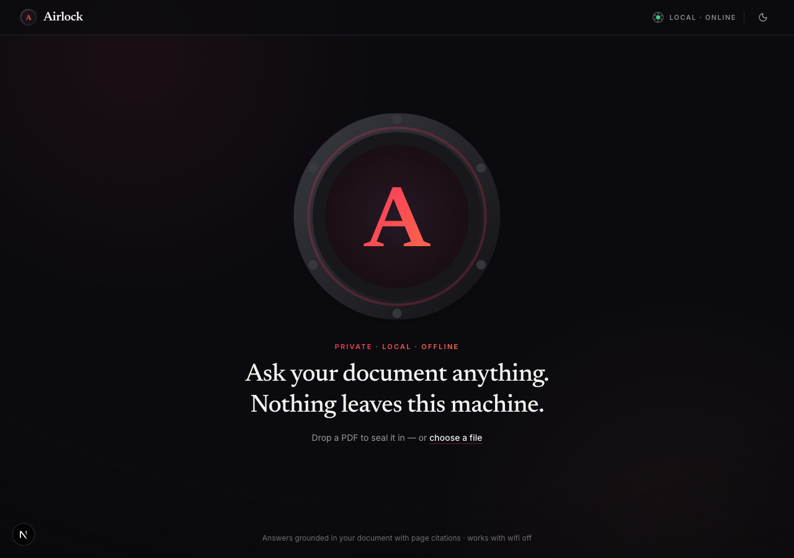
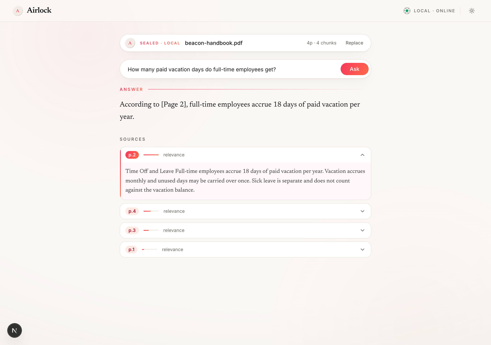

Airlock
Answers from your documents. Nothing leaves your machine.
A fully local PDF assistant. Upload a PDF, ask questions in plain language, and get answers grounded in the document with exact page citations. It works with the wifi off. No cloud, no API keys, no account.

Some documents can never go to the cloud
Legal contracts, medical records, financial statements, HR files. For many of these, sending the contents to a third-party AI service is not a policy preference, it is a legal boundary. The usual conclusion is that these documents simply do not get AI assistance.
Airlock removes that constraint by moving the model instead of the document. The entire pipeline, from text extraction through embedding, retrieval, and generation, runs on the machine where the file already lives. If the document cannot leave the building, the model comes to it.
Seal it. Ask it. Cite it.
-
01
Seal the document
Drop a PDF onto the hatch. Airlock extracts every page, chunks the text page by page, and embeds it locally. The chamber seals; from here the document is indexed and ready.
-
02
Ask in plain language
No query syntax, no prompt engineering. Type the question the way you would ask a colleague who had read the document.
-
03
Get a cited answer
The answer streams in token by token with the exact page cited. Every source expands to the passage it came from. If the answer is not in the document, Airlock says so plainly.


The whole pipeline, on your hardware
Backend
- FastAPI + Pydantic v2 owning the full RAG pipeline, end to end.
- Per-page extraction and page-scoped chunking. Chunks never span pages, so every citation maps to exactly one page, unambiguously.
- In-process embeddings on the CPU. No embedding service to run alongside the chat model.
- NumPy cosine retrieval. Hundreds of chunks need no vector database.
- SSE token streaming from a local llama-3.2-3b served by LM Studio. The model sees only the retrieved chunks, never the full document.
Frontend
- Next.js 15, React 19, TypeScript strict. Typed contracts on every boundary between UI and API.
- The sealed chamber is pure CSS. GPU-composited transform and opacity only, zero animation libraries.
- 136 kB First Load JS. The interface stays light because the work happens in the backend.
- Full reduced-motion support that keeps loading feedback honest, not just switched off.
- Screen-reader support. Streamed answers announce calmly; state is never carried by color or motion alone.
Tested against the real model, not a mock
The end-to-end suite drives the real UI against the real local model: upload, seal, streamed answer, expandable citations, error paths, theme persistence, and the reduced-motion flow.
The failure-mode regressions cover the ugly cases: the backend dying mid-stream, truncated SSE streams, replacing the document while an answer is streaming. The UI always settles. It never sticks.
What v1 is, and is not
- Single user, single machine, single document at a time. It is a local tool, not a service.
- Text PDFs only. No OCR, so scanned documents are out of scope for now.
- No auth. There is nothing to log into because there is no server beyond your own.
- One offline caveat: the first upload triggers a one-time download of a ~90MB embedding model. Everything after that runs with the wifi off.
- The sample document shown in the screenshots is a fictional, generated PDF.